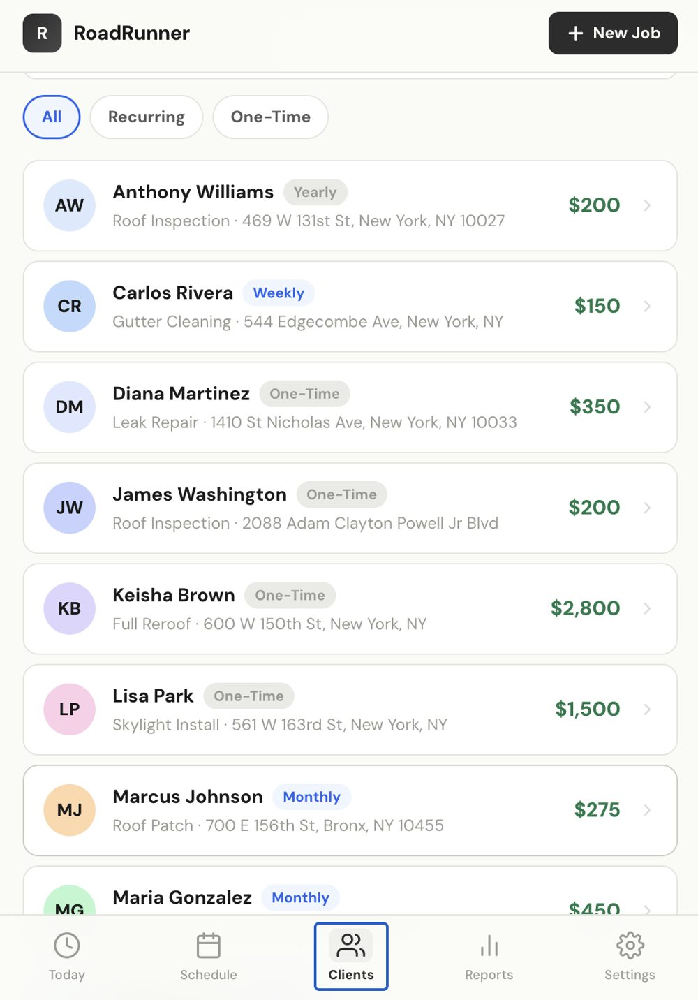
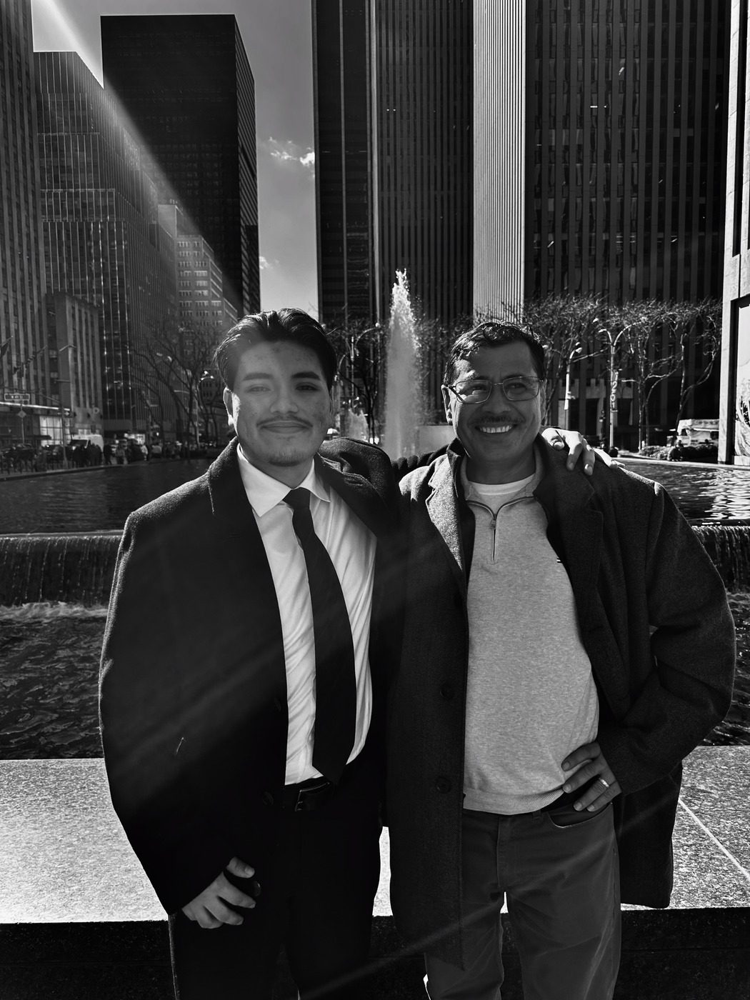

An operations and route optimization tool for service businesses, with a Spanish first positioning aimed at the immigrant owned home service market I grew up around.
Smarter routing and scheduling for teams working in the field.
Built for owners and crews who work in Spanish, a market most tools ignore.
Designed around how service businesses actually run, not how software assumes they do.


RoadRunner started with my dad. I grew up watching him run a construction company without software built for the way he actually works. The whole product is aimed at owners and crews like his, the people most tools quietly leave out.
It came straight from watching my father run a construction company without software built for the way he actually works.
I sell for a living and build the systems that make selling faster. If that mix is useful to your team, I would love to talk.
Get in touch